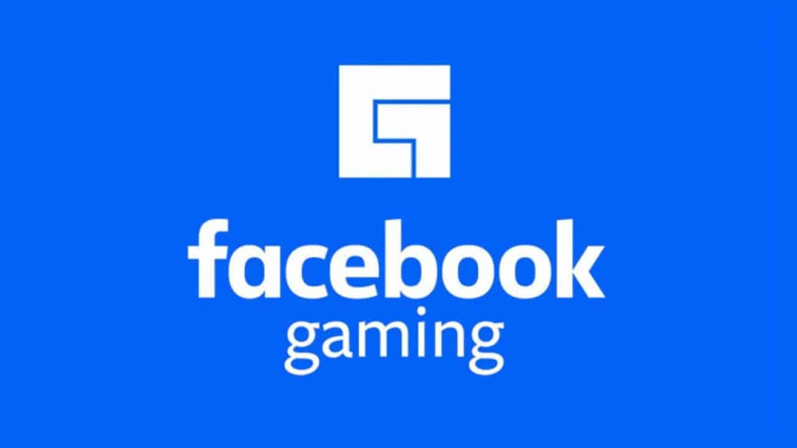

Twitch este un serviciu de live streaming, operat de Twitch Interactive, o filială a Amazon.
Prezentat în iunie 2011 ca un spin-off al platformei de streaming de interes general, Justin.tv, site-ul se concentrează în principal pe
streamingul de jocuri video în direct, inclusiv difuzarea concursurilor eSports, pe lângă transmisiile muzicale, conținutul creativ și mai recent,
fluxuri „în viața reală”.
În mai 2013, s-a deschis crearea fluxurilor live pentru utilizatorii verificați cu cel puțin 1.000 de abonați; în luna august a acestui an numărul
a fost redus la 100 de abonați, iar în decembrie limita a fost eliminată. În februarie 2017, streaming-ul în direct a fost introdus în
aplicația oficială de mobil YouTube. Transmiterea în direct prin mobil a fost inițial restricționată la utilizatorii cu cel puțin 10.000 de abonați,
, dar de la mijlocul anului 2017 a fost redusă la 100 de abonați. Fluxurile live pot fi de până la 4K rezoluție la 60 fps și,
de asemenea, suport video 360 °. În februarie 2017, a fost introdusă o caracteristică de streaming în direct numită Super Chat, care
permite spectatorilor să doneze între 1 și 500 de dolari pentru a-și evidenția comentariile.

În 2018, Facebook a lansat oficial Facebook Gaming la 1 iunie 2018 cu o serie de streamers pentru jocuri,
inclusiv Darkness429, Freya Fox, Stonemountain64, ThePoolshark și Alodia Gosiengfiao.
Facebook Gaming sau fb.gg este acceptarea de către Facebook a transmisiunilor live gaming în care jucătorii
și fanii interacționează. Facebook a lansat-o ca o filă în aplicația Facebook și ca o aplicație de sine
stătătoare. De asemenea, are o caracteristică Rewards in-stream, în care spectatorii beneficiază de
recompense în joc în timp ce urmăresc fluxuri cu Mobile Legends: Bang Bang fiind o parte a pionierului în funcție,
după cum menționează Jack Li, reprezentant Facebook Gaming, la Moonton Epicon, organizat în iulie anul trecut. 18, 2019.